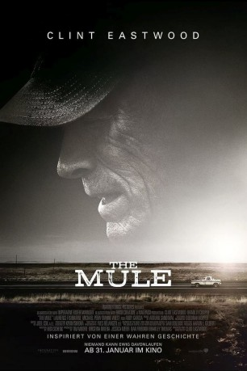

#11172 The Mule
 
 IMDB-Wertung: 7.1 / 10
IMDB-Wertung: 7.1 / 10  Metascore: 58
Metascore: 58 
Earl Stone ist ein alter Mann in seinen Achtzigern, der mittellos und einsam nach der Schließung seines Geschäfts einen Job annimmt, bei dem er eigentlich nur fahren und transportieren muss. Doch dann stellt sich heraus, dass der wichtigste Auftraggeber das mexikanischen Kartell ist und die Ware in Wirklichkeit eine ziemlich heiße Ware ist...
BDRIP DUBBED
Jahr: 2018
Dauer: 116 Minuten
FSK: 12
Land: USA Studio: Warner Bros.Tonspuren: DD5.1 - ,
Untertitel: Deutsch,
Auflösung: 1080p (1920x808) Größe: 9482 MB
Genre: Thriller, Drama, Krimi
Regisseur:  Clint Eastwood
Clint Eastwood
Drehbuch: Sam Dolnick, Nick Schenk
Soundtrack: Arturo Sandoval
Darsteller:
Datei: X:\2018(G-M)\Mule, The (2018, FSK12, 1920x808).mkv seit 02.05.2019
Festplatte: HD 2018(G-Z)-2019(A-Z)
 Es gibt insgesamt 138 Filme in der Gruppe '2018(G-M)'
Es gibt insgesamt 138 Filme in der Gruppe '2018(G-M)'